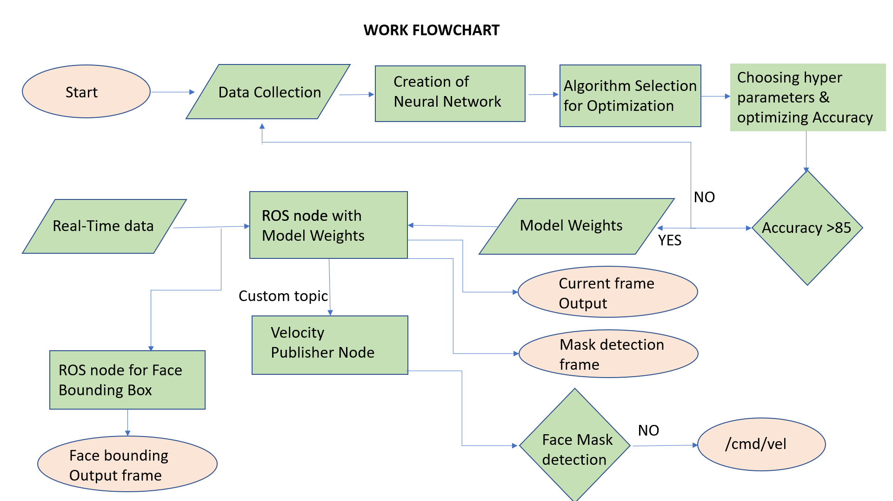
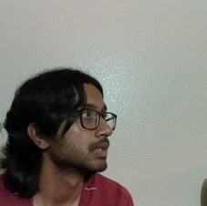
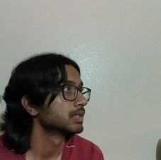
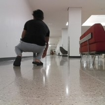
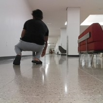
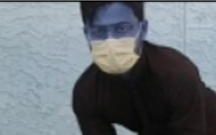
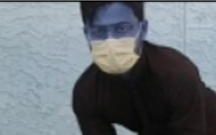
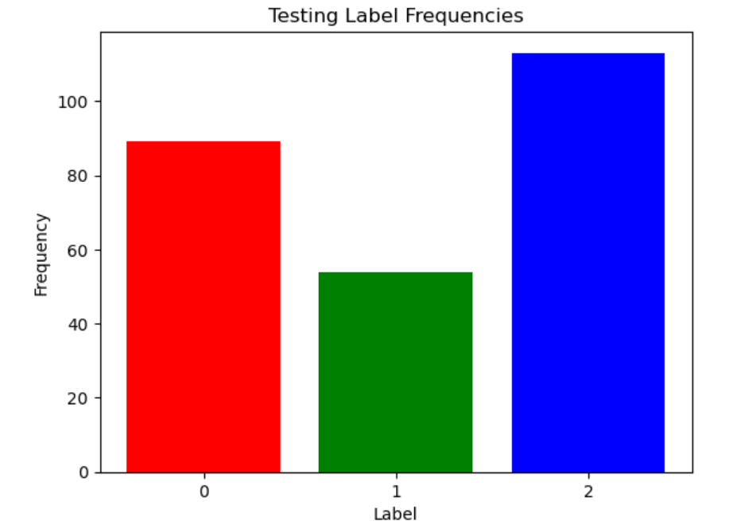

Introduction
The main objective of this project is to detect the absence or presence of facemask using the OAK-D camera feed of turtlebot by deploying Neural Networks.
If the turtlebot camera detects a face without mask, it'll move towards the detected face.
a. Updates/Refreshes
- We made our own Neural Network for the feature generation by taking current_frames from OAK-D camera.
- From the custom NN model, We deployed model_weights to ROS node which does face mask recognition in real time by subscribing to real time data current_frame.
- We used inbuilt software called MTCNN face detection algorithm for creation of the bounding box for faces which is also subscribing to real time data current_frame.
- If the custom model is detecting face without maask, it publishes velocity to move towards that face by using Velocity subscriber Node.
b. Project Process
mkdocs new [dir-name]- Create a new project.mkdocs serve- Start the live-reloading docs server.mkdocs build- Build the documentation site.mkdocs -h- Print help message and exit.
c. Work Flow

-
Initially we collected dataset consisting of huge variations i.e Face with mask and Without Mask at different distances from OAK-D camera at different backgrounds with multiple gestures being performed.
-
Few Instances of preliminary dataset
- With Face Mask - If the frame has frame consisting of face with mask


- Without Face Mask - If the frame has consisting of face without mask and some ambiguity cases of half frames and fully blurred faces.
 



- No recognizable face in Frame - If the frame has no recognizable face and some distant images which are very unclear.
 



Then with the custom Neural Network we devloped, we generated feature maps which shows as following:
 


Even in this zoomed in images, the amount of pixels covering pixels are very few and very difficult to classify the images based on mask from the limited data with high number of variations.
- Although training Acuuracy is good by optimizing the algorithm and increasing number of epochs, testing accuracy is not good with only 65%. If we perform real time detection with this, it would be highly inaccurate.

-
We updated the Training data with Face with and without mask at limited distance at proper light source with few gestures.
-
Few Instances of preliminary dataset
- With Face Mask - If the frame has frame consisting of face with mask
- Without Face Mask - If the frame has consisting of face without mask and some ambiguity cases of half frames and fully blurred faces.


- No recognizable face in Frame - If the frame has no recognizable face and some distant images which are very unclear.

- After Training on data, we got adequate accuracy in Training along with a good amount of testing accuracy of 89%
- we split the data into Training and Testing in 90% and 10% and Training accuracy as follows:
- Training data Classification:

-
Testing data Classification: 
-
Training Accuracy:
d. ROS Network
e. Tradeoffs
Main Challenges
1. Training time
2. Accurate prediction of frames during Real time streaming
f. Videos of Working Model
RealTime detection of Presence or Ansence of mask with absolute zero training of Person's face
f. Goals, Process and Results
Project layout
mkdocs.yml # The configuration file.
docs/
index.md # The documentation homepage.
... # Other markdown pages, images and other files.